Caderno para imprimir · letra grande
Caça-palavras, cruzadinhas, sudoku, labirintos, ditados populares, jogo dos 7 erros e páginas de lembranças. Você imprime em casa, em A4, e ela tem sempre a página do dia para fazer, com as respostas no final.
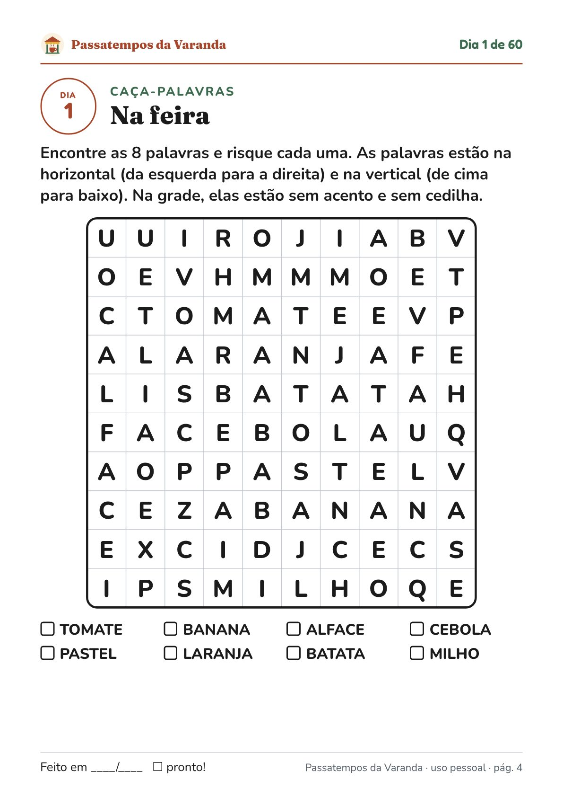
Compra única · garantia de 7 dias · arquivo PDF para imprimir
Quem compra passatempo para a mãe, o pai, a avó ou o avô conhece a história:
O Passatempos da Varanda foi feito para isso: uma página por dia, letra grande, temas brasileiros e variedade, para passar o tempo com prazer.
O que é
São 60 páginas de passatempos, uma para cada dia, que começam tranquilas e ficam um pouco mais desafiadoras com o tempo. Os temas são do nosso dia a dia: feira, cozinha da vó, jardim, festa junina, praia, Natal, profissões, brincadeiras de antigamente.
Tudo em letra grande, com grades largas, traço preto e fundo branco: imprime bem em qualquer impressora de casa, inclusive em preto e branco, e gasta pouca tinta.
Por dentro
Imagens reais do PDF que você recebe. Letra grande de verdade: a grade do caça-palavras ocupa quase a folha inteira.
Dicas do dia a dia, com o número de letras de cada palavra.
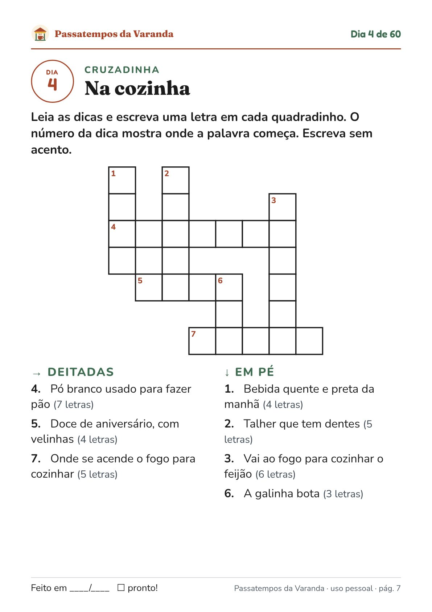
Desenhos próprios, de traço, com exatamente 7 diferenças.
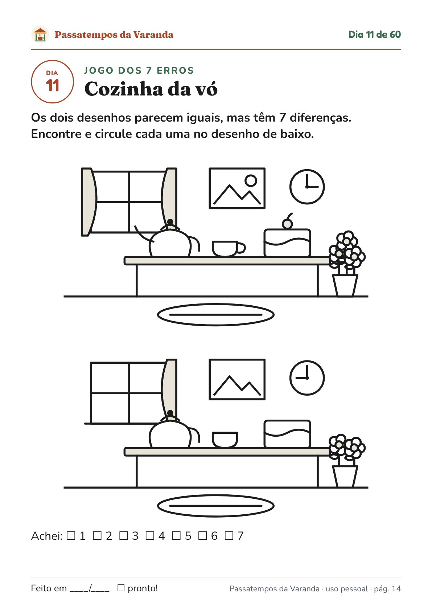
Começa com o 4x4, bem tranquilo, e depois passa para o 6x6.
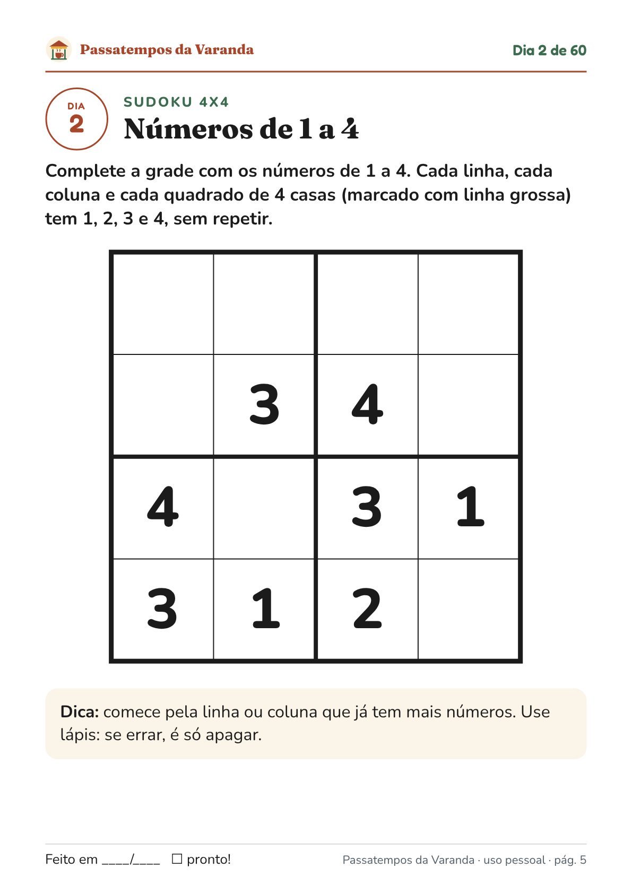
Troco, feira, receita e horário. Nada de conta de escola.
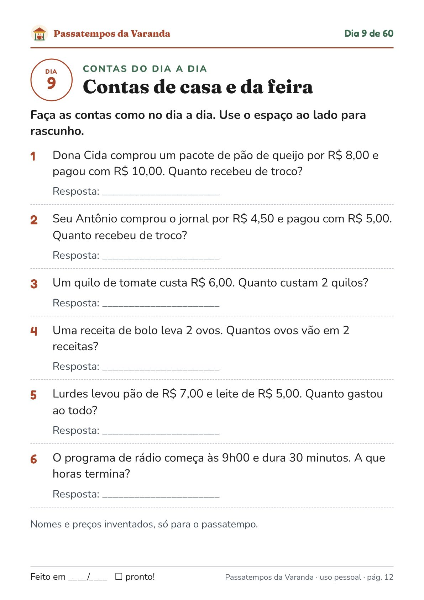
Complete com a palavra do quadro: “Água mole em pedra dura…”.
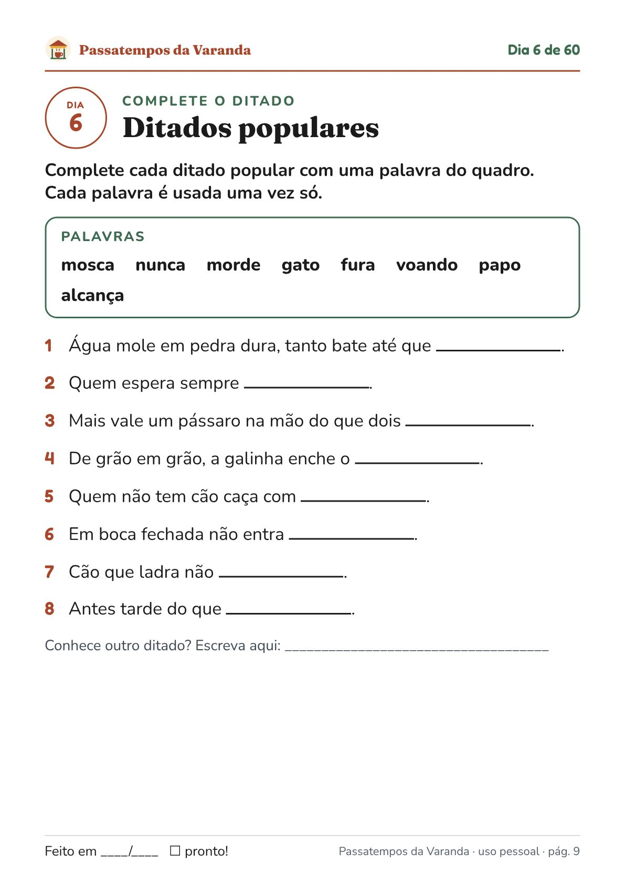
Perguntas para escrever e contar para a família: a casa da infância, a comida de antigamente.
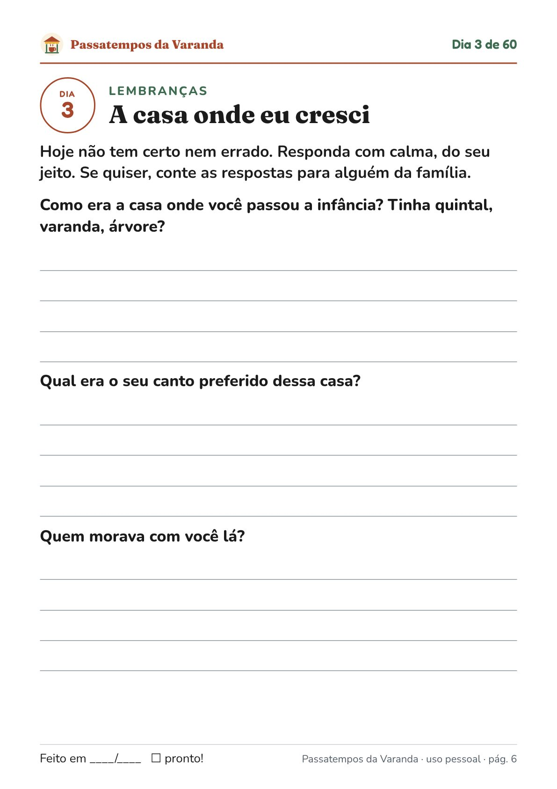
O que vem
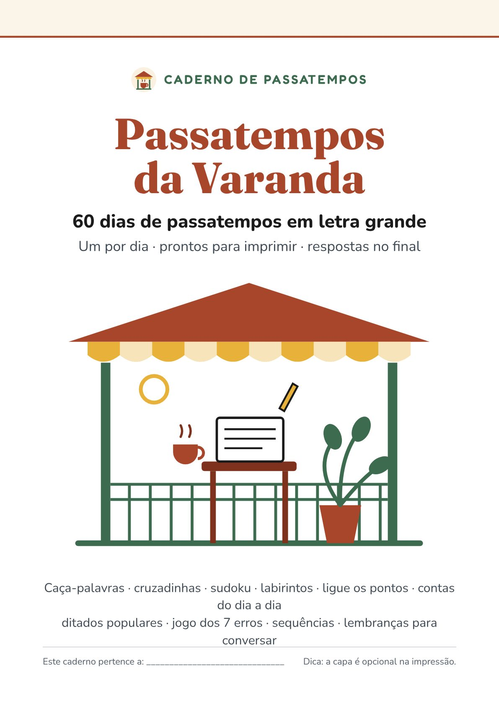
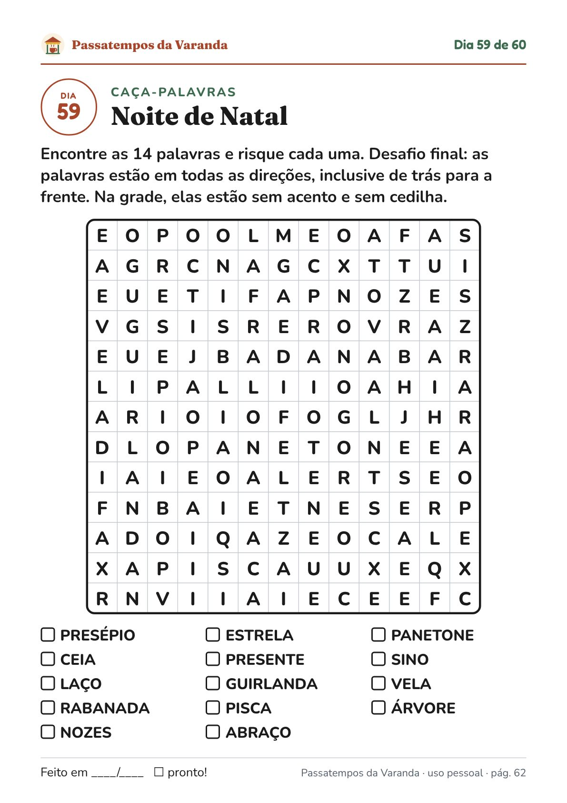
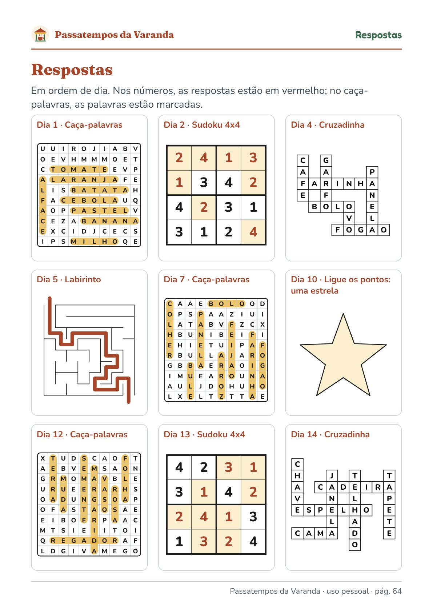
Opcional na hora do pagamento
100 cartões de perguntas para conversar em família, 8 por folha A4, para recortar. Em 10 temas (infância, escola, trabalho, comida, festas, viagens…), para netos e filhos puxarem conversa com os avós na visita ou no almoço de domingo. Combina com as páginas de lembranças do caderno.
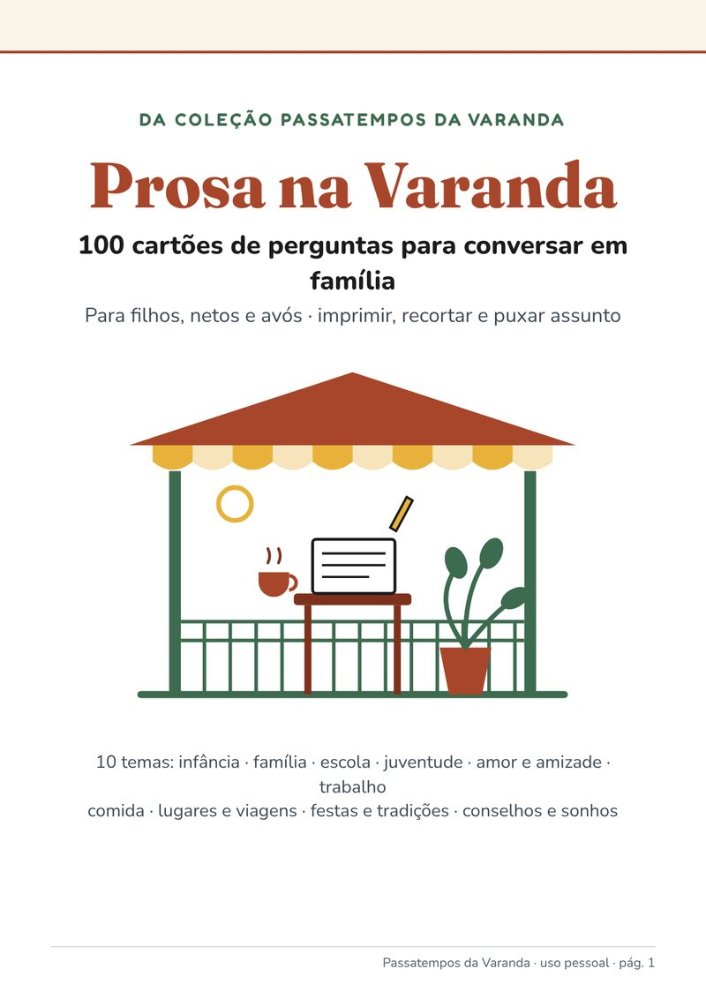
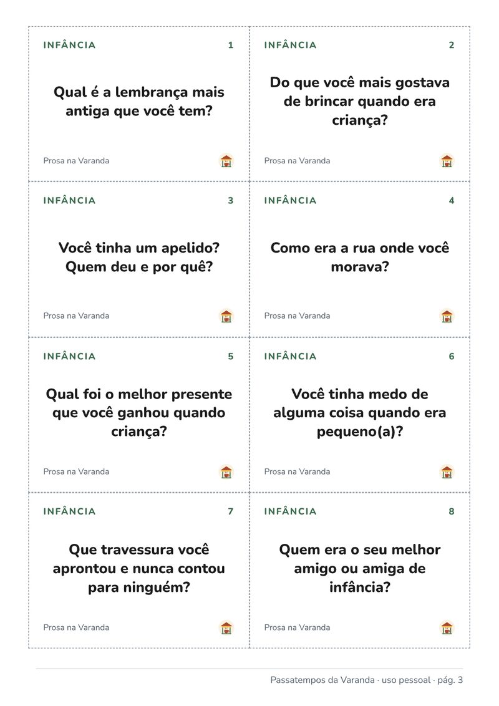
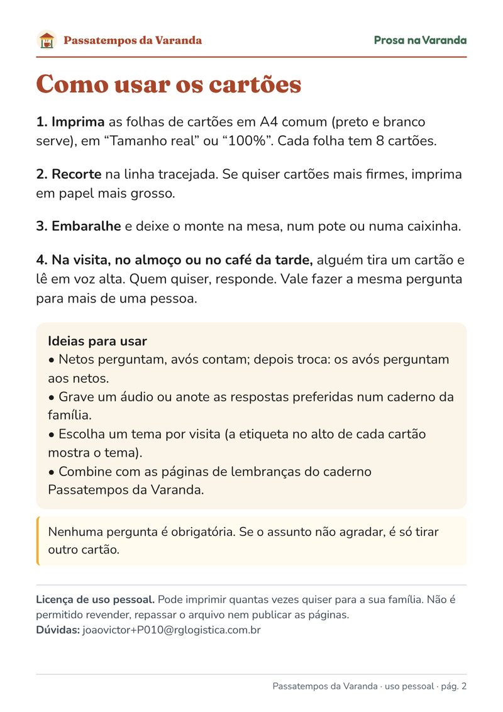
Não é obrigatório: o produto principal funciona sem ele. Aparece como opção na página de pagamento.
Passatempos da Varanda · 60 dias
compra única, não é assinatura
60 passatempos em letra grande + quadro dos 60 dias + respostas. PDF para imprimir em A4.
Quero o cadernoPagamento e entrega pela Kiwify. Os arquivos ficam na área de membros para baixar.
Sim, ou de uma papelaria. O arquivo é PDF em A4. Imprime bem em preto e branco e gasta pouca tinta, porque os desenhos são de traço em fundo branco.
Sim. As instruções têm letra de 16 a 17 pontos e cada letra do caça-palavras fica num quadradinho de mais de 1 cm. Veja as páginas reais acima.
Começa fácil e sobe aos poucos. Os primeiros caça-palavras só têm palavras na horizontal e na vertical; o sudoku começa no 4x4. Todas as respostas estão no final.
Pode. A licença é de uso pessoal e familiar: imprima de novo as páginas preferidas sempre que quiser.
Serve. Você pode imprimir e entregar as folhas (ou montar um caderno com espiral na papelaria). Só não é permitido revender nem repassar o arquivo.
Não. É um caderno de passatempos, para passar o tempo com prazer e fazer junto com a família. Não fazemos nenhuma promessa de saúde.
Depois da confirmação do pagamento, a Kiwify envia por e-mail o acesso à área de membros. Lá estão os arquivos para baixar.
A licença é de uso pessoal. Não é permitido revender nem repassar os arquivos.
Você tem 7 dias de garantia. Peça o reembolso pela Kiwify.
Escreva para joaovictor+P010@rglogistica.com.br.